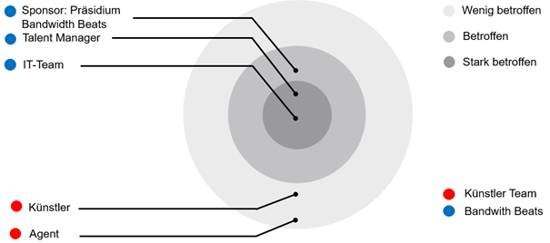

Projektcharta
Beschreibung der Problemstellung
Ausgangslage
Die ZHAW School of Engineering hat kürzlich ihr Musiklabel „Bandwidth Beats“ gegründet. Um erfolgreich durchstarten zu können, benötigt das Label aktuelle Einblicke in die Musikszene. Ziel ist es, zu verstehen, was einen populären Song ausmacht, und diese Erkenntnisse datenbasiert in Entscheidungsprozesse einfliessen zu lassen.
Das Projekt soll von einem Team aus Data-Science-Studierenden umgesetzt werden. Das entstehende Datenprodukt speist die Songdaten der Künstlerinnen und Künstler des Labels ein und erstellt Prognosen zum potenziellen Erfolg von Songs. Im Vergleich zu bestehenden Konkurrenzprodukten ist diese Lösung insbesondere für kleinere Labels zugänglich und zeichnet sich durch eine höhere Flexibilität aus.
Erkenntnisse aus der Nutzer:innen-Analyse
Die Nutzer:innen-Analyse zeigt, dass insbesondere kleinere Musiklabels Wert auf eine möglichst einfache Anwendbarkeit der Lösung legen, ohne umfangreiche technische Vorkenntnisse oder komplexe Prozesse. Ein zentraler Bedarf besteht darin, mit minimalen Eingangsdaten aussagekräftige Analysen und Prognosen zu erhalten. Viele bestehende Ansätze setzen umfangreiche und teilweise schwer verfügbare Datensätze voraus, was für kleinere Labels eine hohe Einstiegshürde darstellt. Entsprechend wird eine datenarme, dennoch robuste Lösung als wesentlicher Mehrwert wahrgenommen.
Stakeholder

Projektsponsor
Der Projektsponsor ist das Präsidium des Musiklabels Bandwidth Beats. Ziel des Auftraggebers ist es, durch den Einsatz von Data Science innovative Entscheidungsgrundlagen für das Label zu schaffen und gleichzeitig den Praxisbezug in der Lehre zu stärken. Der Auftraggeber definiert den Projektauftrag, stellt die Rahmenbedingungen bereit und steht in direkter Beziehung zum Projektteam sowie zum Talent Manager.
Talent Manager
Der Talent Manager verfolgt das Ziel, Künstler:innen datenbasiert zu bewerten und deren Erfolgspotenzial frühzeitig einzuschätzen. Die Projektergebnisse dienen ihm als operative Entscheidungsunterstützung bei der Auswahl, Förderung und Priorisierung von Künstler:innen und Songs. Er steht in engem Austausch mit dem Auftraggeber sowie mit den Künstler:innen und Agent:innen und ist ein zentraler Nutzer des entwickelten Datenprodukts.
IT-Team
Das IT-Team ist für die technische Umsetzbarkeit, Integration und gegebenenfalls den Betrieb der Lösung zuständig. Ziel ist es, eine stabile, wartbare und datenschutzkonforme technische Grundlage sicherzustellen. Das IT-Team arbeitet eng mit dem Projektteam zusammen und koordiniert sich mit dem Auftraggeber, um technische Anforderungen und organisatorische Vorgaben abzugleichen.
Künstler
Die Künstler:innen sind betroffene Stakeholder, deren Songdaten in das Datenprodukt einfliessen. Ihr Ziel ist eine faire und transparente Bewertung ihres Erfolgspotenzials sowie eine gezielte Förderung durch das Label. Sie stehen in Beziehung zum Talent Manager und zu den Agent:innen; direkte Interaktionen mit dem Projektteam finden in der Regel nicht statt.
Agent
Agent:innen vertreten die Interessen der Künstler:innen und verfolgen das Ziel, deren Marktposition und Erfolgschancen zu maximieren. Sie sind indirekt vom Projekt betroffen, da die datenbasierten Entscheidungen des Labels Auswirkungen auf Vertragsgestaltung, Promotion und Investitionen haben können. Agent:innen stehen in enger Beziehung zu den Künstler:innen und im Austausch mit dem Talent Manager.
Situationsbewertung
Ressourcen
- Personal:
- 3 Data Science-Studierende
- Manuel Dömer (Coach)
- Software:
- ZHAW-lizenzierte Software zur Datenspeicherung, Kommunikation und Projekt-Management
- Innerhalb des Kurses «Data Science Grundlagen» bereitgestellte Tools zur Datenanalyse und -modellierung
- 3x $100 Microsoft Azure Edu-Credits
- Zeit:
- 3 Wochen
Einschränkungen & Randbedingungen
- Minimale (Roh-) Inputdaten
- Spotify als Datengrundlage
Risiken
- Ungenügende Datentiefe: Es können nicht genug Faktoren für die Popularität eines Songs identifiziert werden
- Bias: Popularity-Score wurde von Spotify berechnet und ist evtl. nicht universell anwendbar
- Abhängigkeit von Spotify: Nutzungsbedingungen können sich Ändern
Projektziele & Erfolgskriterien
| Thema | Beschreibung |
|---|---|
| Projektziel (Objective) | Talentmanager und Künstler erhalten nützliche Prognosen zu ihren Songs. |
| Kenngrösse | Tatsächlicher Popularity-Score nach 1 Monat |
| Zielwerte | RMSE <= 15 |
| Bereitstellungsform | Jupyter Notebooks |
| Out-of-scope | Kein eigenes Deeplearning Modell |
Data Mining-Ziele
Im Rahmen der Modellierungsphase wird mithilfe der aufbereiteten Daten ein Regressionsmodell entwickelt.
Als Baseline wird eine lineare Regression verwendet. Daraufhin werden die folgenden Algorithmen anhand von R2 und RMSE miteinander verglichen:
- Linear-Regression (Baseline)
- Random-Forest-Regressor
- XGBoost
Als Zielwert für die Modellierungsphase wird mind. 0.4 für die Metrik R2 und max. 10 für die Metrik RMSE festgelegt.
Projektphasen und Zeitplan

Phase 1: Aufgabendefinition
- Vergleichbare öffentliche Projekte analysieren
- Ressourcen abklären
- Stakeholder analysieren
- Projektziele und Erfolgskriterien festlegen
- Modellierungsziele ableiten
- Projektplan erstellen
Phase 2: Datenbeschaffung
- Datenquellen identifizieren
- Daten beschaffen
- Daten ablegen und organisieren
- Datenkatalog erstellen
- Explorative Datenanalyse
Phase 3: Modellierung
- Notwendige Datentransformation durchführen
- Data Mining Algorithmen anwenden und Resultate vergleichen
Phase 4: Evaluation
- Resultate interpretieren und bewerten
- Präsentation der Resultate an die Stakeholder & Entscheid
Phase 5: Bereitstellung
- Übergabe der Software (inkl. Dokumentation) an das IT-Team des Kunden
- Verhandlung der Support-Konditionen
Rollen & Kontaktdaten
| Person | Rolle | Aufgabe | |
|---|---|---|---|
| Aristos Panteli | Präsident (Bandwidth Beats) | Sponsor | aristos.panteli@bandwidth-beats.com |
| Eric André | Talent Manager (Bandwidth Beats) | eric.andre@bandwidth-beats.com | |
| Philipp Boppart | IT Lead (Bandwidth Beats) | philip.boppart@bandwidth-beats.com | |
| Christian Bosshard | Data Scientist | Entwickler | boschr02@students.zhaw.ch |
| Enea D. Fedel | Data Scientist / Teamsprecher | Entwickler | fedelene@students.zhaw.ch |
| Gopigan Villavarayasingam | Data Scientist | Entwickler | villagop@students.zhaw.ch |
| Manuel Dömer | Coach | Bietet Technische Hilfestellung in der Planung und Umsetzung | doem@zhaw.ch |
Kollaborationsmodus
Entwickler
Die Entwickler / Data Scientists halten alle zwei Tage ein Teams-Meetings um den Fortschritt und allfällige Probleme zu besprechen.
Stakeholder
Die Stakeholder, insbesondere der Sponsor wird wöchentlich vom Teamsprecher über den Projektverlauf informiert.
Ressourcen & Tools
- Microsoft 365 Suite
- Excel
- Teams
- Github
- Visual Studio Code
- Quarto
- Python